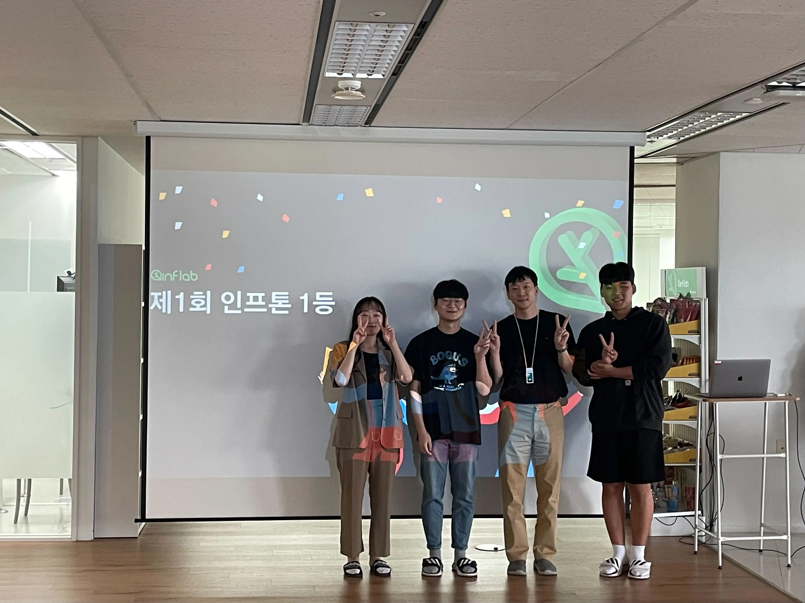
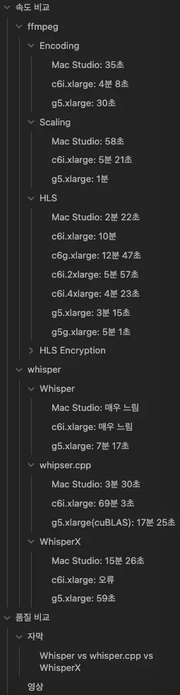
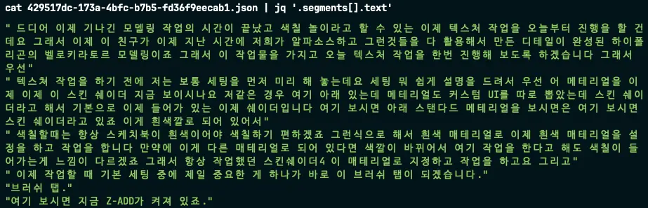
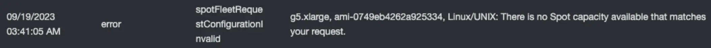
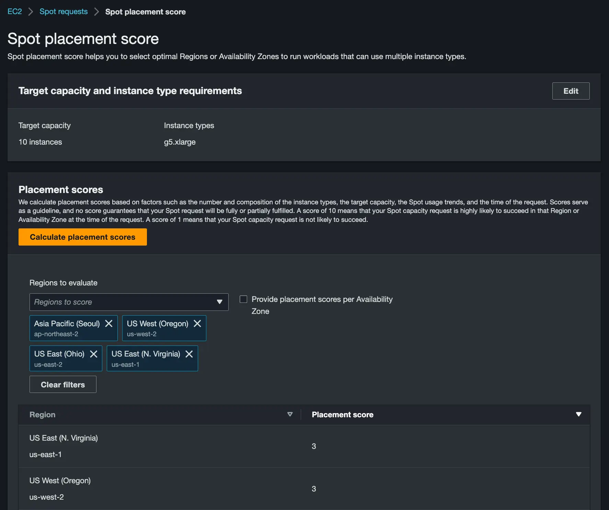

인프런이 자동으로 자막을 생성하기까지
안녕하세요. 인프랩 데브옵스 엔지니어 선비입니다.
2023년 9월, 인프런에 자막 및 스크립트 기능이 추가되었습니다. 다들 잘 사용하고 계신가요?
이번에 추가된 자막 기능은 크게 영상의 음성 데이터를 기반으로 자동으로 자막을 생성하는 부분과 이렇게 생성된 자막을 강의실에서 출력하는 부분으로 나눌 수 있는데요,
오늘은 이 중에서 제가 구현을 맡았던 자막 생성 부분과 관련하여 어떤 기술을 기반으로 어떤 과정을 거쳐 구현하게 되었는지에 대해 말씀드리고자 합니다.
2일만에 자막 기능 만들고 시연하기
먼저, “데브옵스 엔지니어가 자막 기능을 구현했다니?”라고 생각하실 수 있을 것 같아서 이번 자막 기능 구현 프로젝트가 어떻게 시작되었는지 소개해 드리겠습니다.
인프랩에서는 올해부터 인프톤이라는 이름으로 사내 해커톤을 개최하고 있는데요, 신청자를 랜덤으로 4인 팀으로 구성하여 약 2일간 아이디어 논의 및 구현 후 발표하는 형식으로 해커톤이 이루어졌습니다.
그런데 저희 팀 구성이 우연히(?) 인프런 강의 플레이어 및 VOD 인프라를 많이 다루던 FE 개발자 빠삐코와 제가 포함된 구성이 되어서 자연스럽게 강의 재생에 관련된 아이디어를 논의하게 되었고
제1회 인프톤의 주제였던 “팀 생산성 향상 또는 AI를 활용한 서비스 개선”에 가장 적합하다고 생각된 강의 AI 자막 기능을 아이디어로 선택하게 되었습니다.
먼저 AI 기반 자막 생성 기능을 구현하기 위한 최소한의 조건으로 생각했던 것은 다음과 같았습니다.
- 자막 생성이 오프라인으로 동작할 것 (데이터 외부 전송 방지)
- 자막 생성에 컴퓨팅 리소스를 제외한 추가 비용이 들지 않을 것 (오픈소스 모델 직접 실행)
- 자막 생성에 소요되는 시간이 영상 길이를 넘지 않을 것 (라이브 시연 가능한 수준으로 빠를 것)
이러한 조건을 만족하는 기술을 탐색해 보니 OpenAI의 Whisper라는 모델이 눈에 들어왔습니다.
Whisper 외에 검토 대상이었던 기술은 아래와 같습니다.
- KoSpeech: Archived
- OpenSpeech + KsponSpeech: 직접 학습시켜서 모델을 만들기에는 기술 이해도도 아직 낮고 시간도 많이 소요될 것으로 예상됨
- Kakao의 PORORO: Archived
- Meta의 SeamlessM4T: 테스트 강의를 이용한 PoC 과정에서 SeamlessM4T large 모델이 Whisper large-v2 모델에 비해 정확도가 떨어지는 것을 확인
- Naver의 CLOVA Speech 등 API 기반의 서비스: 데이터 외부 전송 및 API 요금 발생
인프톤 이전에도 MacWhisper 등의 도구를 통해서 OpenAI의 Whisper라는 STT 모델의 존재와 높은 정확도에 대해서 알고는 있었지만 깊이 있게 들여다본 적은 없었는데요,
구현 기간이 2일로 짧았기 때문에 구체적인 이해보다는 빠른 적용 및 시연 가능성을 중심으로 작업을 진행하였습니다.
그 결과 모든 과정이 제 Mac 위에서 오프라인으로 동작하도록 구현하였으며, 그 과정에서 Python 기반으로 구현된 OpenAI의 Whisper는 너무 느려서 대신 whisper.cpp 라고 하는 C++로 포팅된 버전을 활용하였습니다.
그리하여 영상을 업로드하면 ffmpeg를 이용하여 16-bit WAV를 추출하고, 이후 whisper.cpp를 이용하여 large-v2 모델을 기반으로 자막을 전사하여 이를 srt 파일로 저장하고, 강의실에서 이 srt 파일을 재생하는 것까지 짧은 기간 안에 구현할 수 있었고
거기에 더해 FE 개발자 빠삐코의 활약으로 스크립트 출력 및 시간 이동 기능, 자막 수정 요청 기능과 수정 요청 관리 기능까지 시연하여 제1회 인프톤에서 1등이라는 영광을 거머쥘 수 있었습니다.

그렇게 즐거운 경험으로 마무리가 된 줄 알았는데…
정식 프로젝트로 채택
어쩌면 당연하게도 자막 기능은 곧바로 정식 프로젝트로 채택되어 새로운 출발을 하게 됩니다.
인프톤에서 이미 시연까지 마쳤기 때문에 큰 우려는 없었지만, 꺼림칙한 점이 세 가지 있었습니다.
- Shaka Player에서 m3u8 HLS 플레이리스트와 srt 자막 파일을 동시에 출력할 때 자막 싱크가 틀어지는 이슈
- AWS 인프라에서 Whisper를 돌려본 적이 아직 없었다는 점
- 한국어 자막의 줄 당 길이와 줄 분할 지점이 적절하지 않아 가독성이 떨어지는 이슈
1번은 FE 개발자 빠삐코가 자막 출력부를 Shaka Player 기능을 사용하지 않고 React로 새로 구현하는 방법으로 깔끔하게 해결해 주셨는데요!
2, 3번은 그대로 현실로 다가오게 됩니다.
인프라 위에서 Whisper 돌리기
가장 먼저 해결해야 했던 문제는 인프톤 때와 다르게 이번에는 실제 사용자를 대상으로 서비스를 해야 하므로 저희 인프라 위에서 기능이 동작하도록 만들어야 했다는 점입니다.
인코딩 인프라 개선 기록
자막 생성 인프라에 대해 이야기하기 전에 먼저 영상 인코딩 인프라가 개선된 과정에 대해 소개하겠습니다.
저희는 2022년 10월까지만 해도 영상 인코딩을 위해 AWS MediaConvert 서비스를 사용하고 있었는데요, 비용 절감과 HLS Encryption 적용을 위해 EC2 c6i.xlarge 인스턴스 기반 AWS Batch 구성으로 전환하였습니다.
그 전부터 MediaConvert의 Reserved Queue를 이용하여 비용을 절감하려는 시도 등이 있었지만 예약된 인코딩이 너무 느리게 시작되는 문제 등으로 필요를 충족하기 어렵다고 판단하여 직접 구성하는 방향을 선택했습니다.
결과적으로 인프라 구성 변화는 효과가 있었습니다. 28분 길이의 1080p 영상을 540p, 720p, 1080p로 인코딩하는 경우 AWS Batch를 사용할 때와 MediaConvert를 사용할 때 소요되는 시간 및 비용은 아래와 같았습니다.
| AWS Batch (ECS EC2 c6i.xlarge Spot) | MediaConvert (On-Demand Pro) | 차이 | |
|---|---|---|---|
| 시간 | 약 10분 | 약 7분 | 약 3분 (x0.7) |
| 비용 | 약 $0.021 | 약 $1.895 (SD x 1, HD x 2) | 약 $1.874 (x90.2) |
영상 길이 대비 인코딩 소요 시간에는 큰 차이가 없지만 비용은 무려 90배 이상 차이가 나는 것을 확인하였습니다.
AWS Batch 구성 내에서 EC2 인스턴스 타입 간 비용 및 성능 분석 결과는 아래와 같았습니다. (28분 길이의 1080p 영상을 540p, 720p, 1080p로 인코딩하는 경우, Spot Instance 미적용 기준)
| 인스턴스 타입 | 온디맨드 시간 당 비용 (A) | 인코딩 실행 시간 (B) | 실제 비용 (A x B) |
|---|---|---|---|
| c6i.xlarge | $0.192 | 10분 | $0.032 |
| c6g.xlarge | $0.154 | 12분 47초 | $0.033 |
| c6i.2xlarge | $0.384 | 5분 57초 | $0.038 |
| c6i.4xlarge | $0.768 | 4분 23초 | $0.056 |
| g5g.xlarge | $0.5166 | 5분 1초 | $0.043 |
| g5.xlarge | $1.237 | 3분 15초 | $0.067 |
인코딩 인프라와 동일한 구성에서 whisper.cpp 시도
위 개선된 인코딩 인프라를 바탕으로 자막 인프라를 동일한 구조로 구성하기를 시도했습니다.
AWS Batch 기반으로 ECS EC2 c6i.xlarge 인스턴스에서 28분 길이의 영상에 대해 whisper.cpp를 실행해보았는데요, 결과는 무려 69분 3초(…)로 예상보다도 훨씬 느렸습니다.
인프톤 시연을 위해 Mac Studio에서 28분 길이의 영상을 whisper.cpp로 실행했을 때 소요된 시간은 3분 30초였습니다.
이를 확인하고 곧바로 GPU 인스턴스에 대한 PoC에 들어갔습니다.
GPU 인스턴스 PoC
처음에는 더 높은 성능의 최신 GPU를 탑재하면서도 더 저렴한 g5g.xlarge 인스턴스를 사용해보려고 했습니다.
그런데 아무리 NVIDIA 드라이버 및 CUDA 버전을 바꿔가면서 시도해도 PyTorch에서 CUDA 인식이 되지 않는 문제가 있었습니다.
CUDA 11 Python cuDNN 라이브러리의 경우 ARM 아키텍처를 지원하지 않고, PyTorch 정식 버전은 CUDA 12를 지원하지 않아서 PyTorch Nightly + CUDA 12 cuDNN 구성을 시도했는데 torch.cuda.is_available() 가 False 를 반환하는 상태가 지속됐습니다.
그러다 AWS Batch에서는 아직 ARM 아키텍처 기반의 GPU 인스턴스를 지원하지 않는다는 문서를 보고 g5g 인스턴스 사용은 일단 포기하였습니다.
이후 g5.xlarge 인스턴스를 기반으로 OpenAI Python 기반의 Whisper를 실행해보았는데 7분 17초가 소요되었습니다.
영상 길이에 비해서는 용납할만한 시간이었지만 Mac Studio에서 whisper.cpp로 실행했을 때 3분 30초가 걸렸던 것을 생각하면 다른 방법이 없을까 고민하게 되었습니다.
그리고 SeamlessM4T에 대해 검색하던 중 우연히 Hacker News에서 WhisperX에 대해 언급한 댓글을 보게 되었습니다.
WhisperX로 전환
WhisperX를 이용하여 g5.xlarge 인스턴스에서 28분 길이의 영상에 대한 자막 생성을 시도해보니 59초만에 완료되어 가장 빠른 속도를 보여주었습니다. 그 결과물도 Whisper나 whisper.cpp에 비해 정확도가 떨어지거나 하지 않고 장단점이 있는 모습을 보여주었습니다.
아래는 결과물 비교 당시 작성했던 노트의 일부입니다.
Whisper, WhisperX는 g5.xlarge에서, whisper.cpp는 Mac Studio에서 추출한 버전
셋 모두 차이가 꽤 있는데, 어느 하나가 가장 나은 것이 아니라 각자 잘 나타낸 부분이 있음.
WhisperX가 정확하게 추출한 부분
- 뽑았는데 (Whisper: 꼽았는데)
- 등허리 (Whisper: 등어리)
- 복부 (Whisper: 복구)
whisper.cpp가 정확하게 추출한 부분
- Eye Reflect (WhisperX: I Reflect)
Whisper가 정확하게 추출한 부분
- Z-Remesh (WhisperX: gremesher)
- 입토폴로지 (WhisperX: 입도 클로징, whisper.cpp: 유토폴로지)
- 아이리플렉트 (WhisperX: I Reflect)
WhisperX가 나머지 둘보다 훨씬 빠르게 실행되며 음절 단위로 align 하므로 줄 재구성에 유리하고 자막 수정 요청 기능의 유효성이 비교적 높을 것으로 추정된다는 점을 고려하면 WhisperX를 사용하는 것이 가장 낫다고 보임.
다만 빠르게 여러 문장을 말하는 부분에서 빠뜨리는 문장이 있는데 정확도가 낮다고 판단해서 의도적으로 제거하는 것으로 보여짐.
이렇게 해서 인프라 위에서 자막 생성 기능이 동작 가능하도록 만들었습니다. 그 과정에서 GPU 인스턴스에 대한 PoC와 인코딩에 관한 분석도 진행되어 인코딩 관련 프로세스 개선도 진행되었습니다.

(시행착오의 흔적)
자막 길이 및 가독성 개선
자막을 어떻게 생성할 것인가는 음성 데이터로부터 텍스트를 추출하는 것에서 끝나지 않았습니다.
whisper.cpp, Whisper, WhisperX 모두 --max_line_width 와 같은 한 줄의 길이를 제한하는 옵션이 있었는데요, 문제는 이 옵션이 동작하지 않는다는 것이었습니다. (…)
한국어라서 동작하지 않는 것이라고 추정했는데 정확한 이유는 아직도 파악하지 못했습니다. (혹시 아시는 분이 계시면 댓글로 남겨주시면 감사드리겠습니다.)
그래서 모델이 뽑아준 자막 데이터를 보면 줄마다 길이가 들쭉날쭉하고 문장이 끝날 때 줄이 넘어가는 경우가 거의 없었으며 그로 인해 가독성이 꽝인 상태였습니다.

이를 개선하기 위해 온점/물음표/느낌표가 있으면 줄을 나누는 방안, 길이가 일정 글자 수 이상이면 단순하게 공백을 기준으로 반으로 잘라버리는 방안, 형태소 분석을 통해 줄을 재구성하는 방안 등 다양한 방안을 모색하였습니다.
그러다 WhisperX로 전환한 이후 음절 단위로 시간이 붙게 되면서 아예 모든 줄을 새로 만들자는 생각을 하게 됩니다.
그리고 아래와 같은 기준을 세우고 WhisperX 실행부터 줄 구성까지 한번에 진행하는 Python 스크립트를 구현하였습니다.
- WhisperX가 시간 추적에 실패한 음절의 시간 값은 시간 추적에 성공한 가장 가까운 전, 후 음절의 시간 또는 문장의 시작 및 끝 시간으로부터 선형 보간한다.
- 직전 단어까지 한 줄이 0.5초 미만이면 다른 어떤 조건을 만족하더라도 줄을 구분하지 않는다.
- 직전 단어까지 한 줄이 10초를 넘어가면 줄을 구분한다.
- 이번 단어로 한 줄이 10글자를 초과하고 형태소 분석 결과 문장 수에 변화가 일어나면 줄을 구분한다.
- 이번 단어로 한 줄이 50글자를 초과하면 줄을 구분한다.
- 문장의 시작이 직전 문장의 끝에서 0.5초 이내인 경우 문장의 시작으로 직전 문장의 끝 시간을 대신 사용한다.
사실 이 중에서 네 번째, 형태소 분석 기반 문장 수를 기준으로 하는 부분은 가장 마지막에 만든 기준인데요,
이 기준이 생기기 전까지는 WhisperX를 CLI로 실행한 뒤 JSON으로 저장된 데이터를 읽어서 줄 구성을 하는 부분을 Go 언어로 구현하였었는데
형태소 분석 및 문장 수 계산에 Kiwi의 split_into_sents 함수를 이용하게 되면서 WhisperX를 Python 내에서 직접 실행하도록 하고 줄 구성 부분까지 Python으로 다시 구현하게 되었습니다.
그리고 이렇게 작성된 Python 스크립트를 실행하고 최종적으로 구성된 자막 데이터를 저장소에 저장하는, AWS Batch 내에서 작업 하나의 생명 주기를 관리하는 부분만 Go로 진행하는 구조가 되었습니다.
이렇게 해서 현재 제공되고 있는 자막과 같이 가독성이 훨씬 개선된 자막 데이터를 생성할 수 있었습니다.
GPU 인스턴스 부족 문제 회피
문제가 되었던 부분은 모두 해결되었다고 생각하여 실제로 그동안 업로드되었던 강의를 대상으로 자막을 일괄 생성하는 작업을 수행하고자 했습니다.
그런데 AWS Batch에 작업을 밀어 넣고 아무리 기다려도 EC2 인스턴스가 실행되지 않았습니다. Spot Request를 확인해 보니 서울 리전에 g5.xlarge 인스턴스에 대한 Spot capacity가 없어서 실행이 되지 않고 있었던 것이었습니다.

GPU 인스턴스가 모자란다는 이야기는 많이 들었지만 실제로 경험한 것은 처음이었습니다. 그렇게 3일을 기다려도 실행이 안 되는 것을 보고 다른 방법을 찾기 시작했습니다.
가장 먼저 Spot placement score 라는 기능을 이용해 보았습니다. 미국의 버지니아, 오하이오, 오레곤 리전이 g5.xlarge 인스턴스가 가장 저렴하기도 했고 Placement Score도 높게 나와서 먼저 버지니아 리전으로 가보았습니다.

이번에 처음으로 간 리전이었으므로 아무 것도 없었기 때문에 VPC, Subnet, EIP, NAT Gateway부터 시작해서 각종 AWS Batch 관련 리소스 등을 전부 새로 만들어 주었습니다. 그리고 실행해 보니 똑같이 Spot capacity가 없다는 오류가 발생했습니다.
낭패다!! 생각하고 바로 옆 리전인 오하이오 리전에도 동일한 구성을 해보았는데 역시 Spot capacity가 없다는 오류가 발생했습니다. (…)
Placement Score는 믿을 게 못되는구나 싶어서 찾아보니 스팟 인스턴스 어드바이저라는 것을 발견하였습니다.
g5.xlarge 스팟 인스턴스 중단 빈도가 낮은 지역을 찾아보니 오레곤 리전이 낮은 것을 확인했습니다.
버지니아, 오하이오 리전에 만들었던 것은 모두 지우고 오레곤 리전에 구성해서 실행해 보니 드디어 자막 생성 작업이 돌기 시작했습니다.
일괄 처리를 위해서 동시에 2,000대의 g5.xlarge 인스턴스를 실행할 계획이었으나 오레곤 리전에서조차 인스턴스 부족으로 최대 500대 정도밖에 실행되지 않았지만 약 4시간 만에 자막 일괄 생성을 완료할 수 있었습니다.
또한 자막 일괄 생성 작업에 소요된 비용은 ** 8,700, Naver CLOVA CSR API로 처리했다면 약 $ 17,400가 소요되었을 것이라는 점을 생각하면 API를 사용하는 것에 비해 약 10배 이상 낮은 비용으로 자막을 생성하도록 구성할 수 있었습니다.
결론
위와 같은 과정을 통해 약 2개월이라는 시간 동안 성공적으로 자막 생성 기능을 구현할 수 있었습니다.
인프톤이라는 계기로 2일 만에 아이디어 선정부터 기술 조사를 거쳐 시연을 위한 구현을 마치고, 이후 2개월 동안 이를 사용자에게 출시 가능한 수준으로 끌어올리기 위해 다양한 시도를 해본 값진 경험이었습니다.
자막 생성에 관한 기술적인 부분도 눈여겨보실 만하지만 특히 강조하고 싶은 점은 한 사람이 짧은 기간 안에 한 것 치고는 인프라 관련 작업량이 상당히 많았다는 부분입니다.
아무 리소스도 없는 리전을 3번이나 건너다니며 VPC부터 AWS Batch 환경까지 구성하는 것을 하룻밤 사이에 해낼 수 있는 것은 무언가 준비되어 있지 않았다면 불가능한 일입니다.
특히 수강권이 있는 사용자에게만 자막 데이터가 제공되어야 하는 부분이나 자막 저장소를 S3에서 MongoDB로 이전하는 등 본문에 기술하지 않은 수많은 인프라 작업들이 있었는데, 이들을 언급하지 않은 이유는 거의 고민하지 않고 빠르게 처리할 수 있었기 때문입니다.
이것이 가능했던 것은 그동안 열심히 구축한 IaC 덕분이라고 말할 수 있을 것 같습니다.
저희가 어떻게 IaC를 구축했는지에 대해서는 인프랩 IaC 구축기 (Part 1) 글에서 확인하실 수 있습니다.
AWS CDK에서 Terraform으로 글 이후로 (Terragrunt와 Terratest에 대한 글을 예고해 놓고…) 무려 1년 8개월 만에 돌아온 이유에 대해 자세하게 담았으니 IaC에 대해 관심 있으신 분들은 읽어보시면 좋을 것 같습니다!
감사합니다.